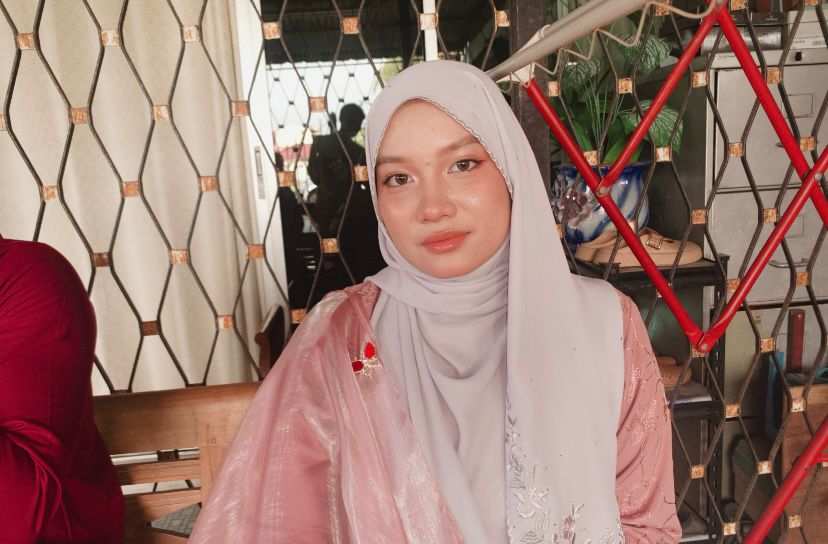

My personal details

Hi!
My name is Nurul Sofiyyah Binti Asmerani, from Selangor. I am currently pursuing a Diploma of Library Informatics at UiTM Kedah.
I am passionate about exploring how information technology can enhance library services and user experience.
Growing up as the third child in a big family taught me the importance of teamwork, patience, and adaptability, qualities that I apply in both academic and personal life.
I enjoy learning new skills, especially in web design and digital content creation, as they allow me to express creativity while maintaining structure and organization. My goal is to build a career that combines knowledge management with creative communication, contributing to a more efficient and engaging information environment.